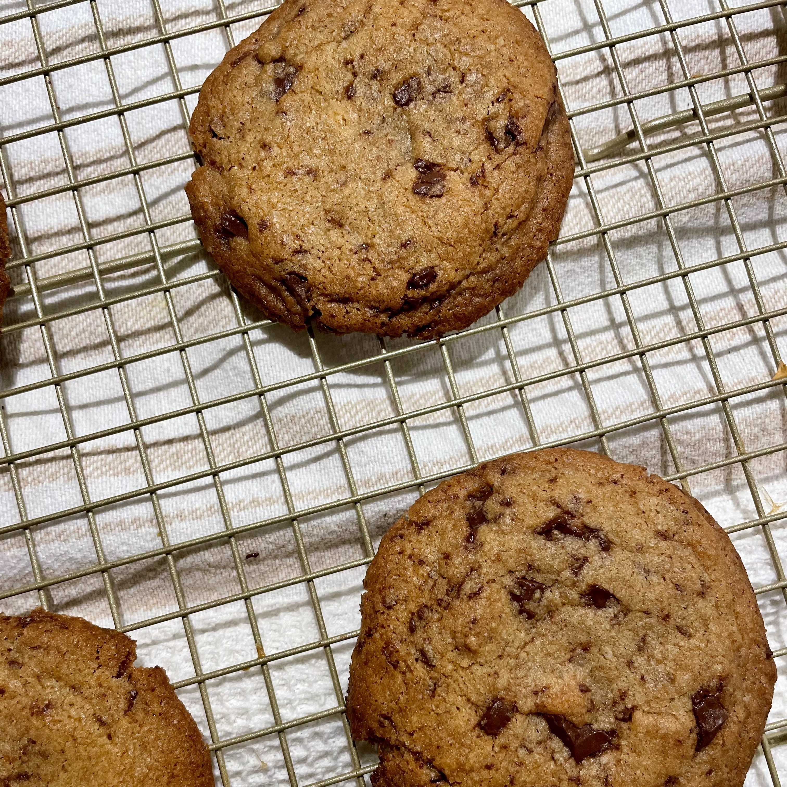

Chocolate Chip Cookies

Description
What makes the perfect chocolate chip cookie? This is a question that I have been thinking about for as long as I can remember.
Is it thick and chewy? Is it crispy and dunk-able? What is the best chocolate-to-dough ratio? And perhaps most importantly, how long do I have to wait between
craving a cookie before I actually get to eat one?
The answers to these questions are deeply personal, and perhaps should be used to evaluate personality types or to determine relationship compatibility.
Maybe you can wait for cookie dough in the fridge for 48 hours, but I certainly cannot. However, despite the vulnerability it takes to share such personal
preferences, I have decided to divulge my perfect recipe with you.
My perfect chocolate chip cookie is crisp around the edges, and soft and gooey in the middle. This may be a controversial take, but I do not believe that more is more when it comes
to the amount of chocolate you include. Also, if a chocolate chip cookie recipe does not require browning butter, I am deeply skeptical. The rich caramel flavour that brown butter adds
is something that I always look forward to when I bite into a cookie. The recipe that best embodies my preferences was developed by Chris Morocco at Bon Appetit.
Since he released the recipe, I have baked hundreds (maybe thousands) of cookies, and have made some slight adjustments based on my preferences. My favourite thing about
this recipe is that there is minimal equipment involved, you don't need to chill the dough before baking, and all the ingredients can come straight out of the fridge. No softening butter or room-temperature eggs required.
The recipe I have written below reflects my changes, but if you want to see the original, you can view it here.
Ingredients
- 100g all-purpose flour
- 100g whole wheat flour
- 3/4 tsp Kosher salt
- 3/4 tsp baking soda
- 169g unsalted butter, divided
- 200g dark brown sugar
- 50g granulated sugar
- 1 large egg
- 2 large egg yolks
- 2 tsp vanilla extract
- 4oz semi-sweet baking chocolate
- 2oz unsweetened baking chocolate
Steps
- Place racks in upper and lower thirds of oven; preheat to 375°. Whisk 100g all-purpose flour, 100g whole-wheat flour, 3/4 tsp kosher salt, and 3/4 tsp baking soda
in a small bowl; set this mixture aside.
- Cook 113g unsalted butter in a saucepan over medium heat, swirling often and scraping bottom of pan with heatproof rubber spatula, until butter foams, then browns.
Scrape melted butter and any brown bits to a large heatproof mixing bowl and let cool 1 minute. Cut remaining 56g unsalted butter into small pieces and add to brown
butter (it should start to melt but not foam and sizzle, so test with one piece before adding the rest).
- Tip: Start on high heat, then reduce to medium as the butter melts down completely and starts to bubble.
- Tip: Aim for a medium-deep golden colour on the butter solids. As it cools down it will continue to brown a little more, and I find this range gives a deeper
caramel flavour to the cookie.
- Once butter is melted, add 200g dark brown sugar and 50g granulated sugar and whisk, breaking up any clumps, until sugar is incorporated and no lumps remain. Add 1
large egg and 2 large egg yolks and whisk until sugar dissolves and mixture is smooth, about 30 seconds. Whisk in 2 tsp vanilla extract. Using a rubber spatula,
fold reserved dry ingredients into butter mixture until no dry spots remain, then fold in 4oz semi-sweet chocolate, and 2oz unsweetened chocolate, coarsely chopped.
The cookie dough will be soft but should hold its shape once scooped; if it slumps or oozes after being scooped, stir dough back together several times and let rest
5-10 minutes until scoops hold their shape better as the flour hydrates.
- Portion out 16-24 balls of dough and divide between parchment-paper-lined rimmed baking sheets. Bake cookies until deep golden brown and firm around the edges,
8-10 minutes. Let cool on baking sheets.
- Tip: The dough will spread quite a bit while baking. If you have 24 dough balls, you can only fit 6 cookies per half baking sheet without forming conjoined
cookies.
- Do Ahead: Dough balls can be portioned 3 months ahead; freeze on cookie sheets and then transfer to a resealable plastic bag. Bake from frozen, adding 1-2
minutes onto the cookie time. Cookies can be baked 3 days ahead. Store in an airtight container at room temperature. You can also freeze the dough in logs,
but you may need to leave it on the counter to thaw so you can easily cut into it and form balls before baking.
And there you have it! My perfect cookie recipe. If this is yours too, maybe that's a sign we should be friends!
Want to browse more recipes? Odin Recipes